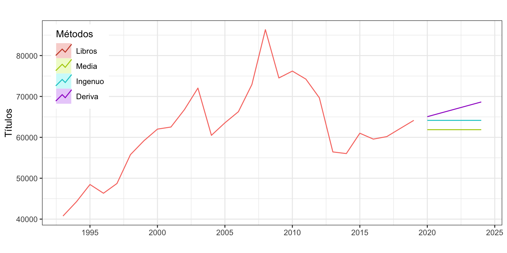
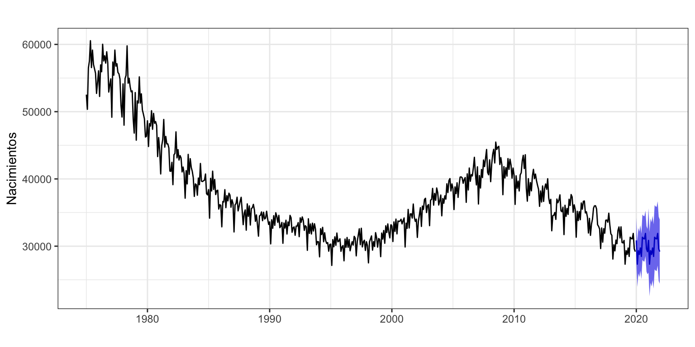
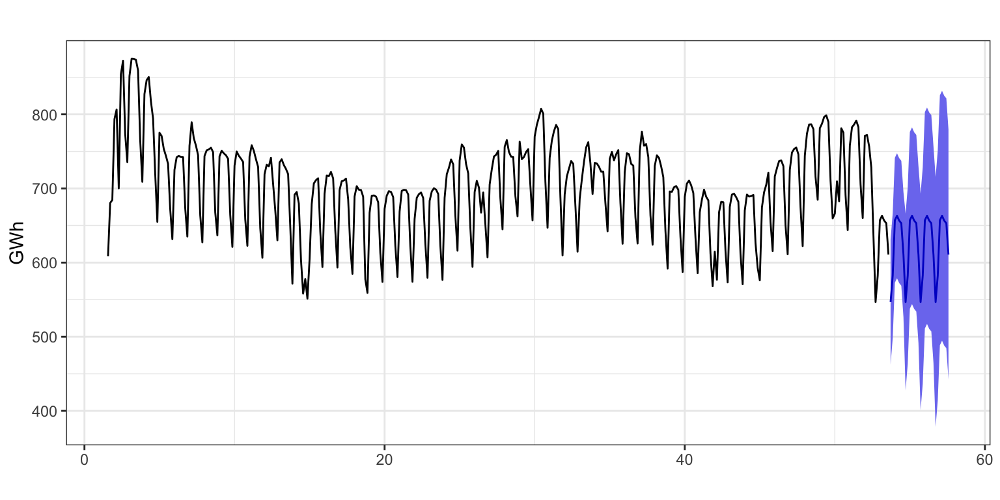
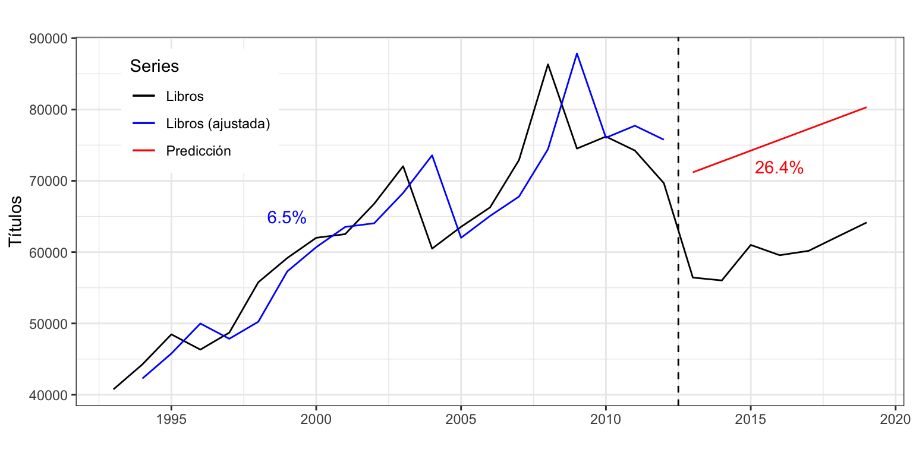
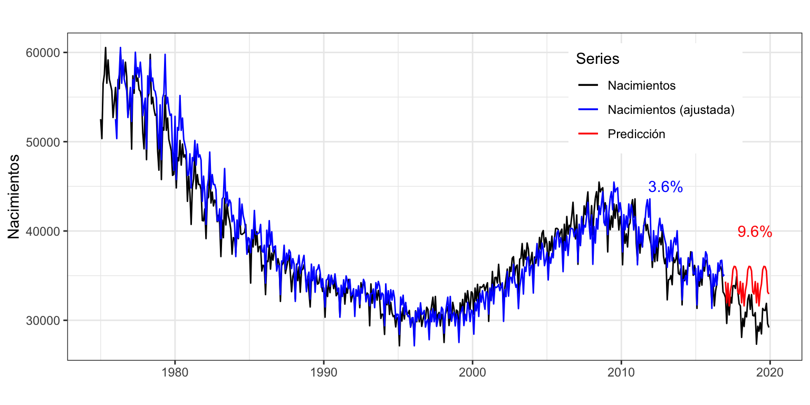

Métodos sencillos de predicción. Evaluación de predicciones
Previsión con Datos Temporales (GBIA)
1 Introducción
En muchos casos es preciso aplicar un método de predicción rápido y sencillo:
- A causa del elevado número de series que tienen que ser analizadas.
- Debido a la rapidez con que las predicciones se han de dar.
Actualmente existen muchos métodos sencillos de predicción, entre los que cabe destacar dos:
- Métodos de media móvil (Tema 4).
- Métodos de alisado exponencial (Tema 5).
Estas técnicas, a pesar de su sencillez, son bastante adecuadas cuando la previsión es a corto plazo:
“Statistically sophisticated or complex methods do not necessarily produce more accurate forecasts than simpler ones.” Makridakis and Hibon (2000)
Pero hay métodos aún más sencillos que quedan englobados bajo el paraguas de métodos sencillos que veremos en este tema.
2 Criterios de calidad
En este tema y en los siguientes se verán diferentes métodos para predecir una serie temporal. Así, es preciso definir criterios de bondad de ajuste que permitan estimar tanto la calidad del ajuste como de las predicciones de un método.
“The rankings of the performance of the various methods vary according to the accuracy measure being used.” Makridakis and Hibon (2000)
2.1 Notación y definiciones
Dada una serie temporal \(\{y_t\}_{t=1}^T\), se define:
- Previsión \(h\) periodos adelante, como la previsión de la serie para el periodo \(t+h\) disponiendo de información hasta el periodo \(t\), y se denota por \(\hat{y}_{t+h|t}\). Por simplicidad lo escribiremos también como \(\hat{y}_{t+h}\).
- Así, \(\hat{y}_{t+1|t}\) es la previsión un periodo adelante o a un periodo vista. Es decir, la previsión de la serie en el periodo \(t+1\) desde el periodo \(t\).
Por simplicidad denotaremos a \(\hat{y}_{t+1|t}\) como \(\hat{y}_{t+1}\); y como \(\hat{y}_{t}\) a la previsión en \(t\), con datos hasta el periodo \(t-1\) (\(\hat{y}_{t} = \hat{y}_{t|t-1}\)).
Se define como error de previsión a un periodo vista a \[\hat{e}_t=y_t-\hat{y}_t,\] de forma que la serie \(\{\hat{e}_t\}_{t=1}^T\) nos permitirá definir varios criterios de calidad de ajuste.
2.2 Medidas de precisión de la predicción
Dada una serie \(\{y_t\}_{t=1}^T\), un método de predicción y su vector de errores asociado \(\{\hat{e}_t\}_{t=1}^T\), podemos definir múltiples medidas de calidad del método de predicción que hacen referencia a la presencia de sesgo en las predicciones, la magnitud del error cometido y la calidad del intervalo de confianza de las predicciones. Las más habituales son (siglas en inglés):
- Error medio (ME): \(\frac{1}{T}\sum_{t=1}^T \hat{e}_t\)
- Raíz del error cuadrático medio (RMSE): \(\sqrt{\frac{1}{T}\sum_{t=1}^T \hat{e}^2_t}\)
- Error absoluto medio (MAE): \(\frac{1}{T}\sum_{t=1}^T |\hat{e}_t|\)
- Error porcentual medio (MPE): \(\frac{100}{T}\sum_{t=1}^T \frac{\hat{e}_t}{y_t}\)
- Error porcentual absoluto medio (MAPE): \(\frac{100}{T}\sum_{t=1}^T \big|\frac{\hat{e}_t}{y_t}\big|\)
- Error porcentual absoluto medio simétrico (sMAPE): \(\frac{200}{T}\sum_{t=1}^T \Big|\frac{\hat{e}_t}{y_t + \hat{y}_t}\Big|\)
- Error escalado absoluto medio (MASE): \(\big(\frac{1}{T}\sum_{t=1}^T |\hat{e}_t|\big)/q\), donde \(q\) es el error absoluto medio para un método ingenuo de predicción: el método ingenuo I para series sin estacionalidad y el método ingenuo con estacionalidad para series con estacionalidad.
- Correlación entre \(\hat{e}_t\) y \(\hat{e}_{t-1}\) (ACF1).
ME y MPE permiten valorar el sesgo de las predicciones (que estas estén sistemáticamente por encima o por debajo de los valores reales).
- Lo esperado es un valor cercano a cero (con relación al valor medio de la serie). Valores muy alejados de cero son indicadores de sesgo de predicción.
RMSE y MAE indican el error medio cometido, medido en las mismas unidades que la serie temporal.
- Están acotadas inferiormente por el valor óptimo de 0, pero no hay cota superior.
MAPE y sMAPE indican el error porcentual medio cometido.
- Están acotadas inferiormente por el valor óptimo de 0%, y la cota superior natural es 100%, aunque podría sobrepasarse.
- Si \(y_t\) puede valer 0, entonces MAPE no se puede calcular. Además, MAPE penaliza más los errores negativos frente a los errores positivos. La medida de precisión sMAPE se define a fin de corregir estos problemas.
MASE es la ratio entre el error del método usado y el error de un método ingenuo de predicción. Permite saber cuánto ganamos en capacidad predictiva al pasar de un método ingenuo a otro más complicado.
- Un valor cercano a 1 indica que el método usado no es mejor que el método ingenuo
- Cuanto más cercano a 0, mejor es el método usado respecto del método ingenuo
- Su complementario a 1 se puede interpretar como la tasa de mejora
ACF1 permite saber si la fórmula usada para estimar el intervalo de confianza de las predicciones es válida. Lo veremos con más detalle en el tema de modelos ARIMA. Por ahora basta saber que:
- Un valor muy cercano a 0 indica que la fórmula es válida.
- Valore mínimamente alejados de 0 indican que la fórmula no es válida.
Ve a la Píldora Bootstrapping para intervalos de predicción para saber más sobre las fórmulas usadas para estimar el intervalo de confianza de las predicciones y alternativas de cálculo cuando estas fórmulas no son válidas.
Las medias se pueden sustituir por medianas. Esto es especialmente útil cuando para algunas observaciones hay errores atípicamente altos.
Si para realizar la predicción del periodo \(t\) se usa una metodología que utiliza datos incluido dicho periodo, se hablará de predicción y error intra-muestral. En caso contrario, si la predicción del periodo \(t\) usa una metodología que solo necesita de datos hasta el periodo \(t-1\), se hablará de predicción y error extra-muestral.
Los indicadores de calidad que se basan en predicciones intra-muestrales a un periodo vista presentan dos problemas. Primero, evalúan el error de predicción a un periodo vista, cuando en muchas situaciones reales las predicciones se realizan sobre un horizonte temporal más amplio. Segundo, son errores intra-muestrales, resultantes de predecir los mismos datos que ha usado el método para calcular la predicción y, por tanto, sobrestiman la capacidad predictiva del modelo.
Veremos en el epígrafe 4 de este tema métodos de evaluación de la calidad de las predicciones que superan estas limitaciones.
3 Métodos sencillos de predicción
Algunos métodos de predicción son extremadamente sencillos y sorprendentemente eficaces. A veces son denominados métodos ingenuos. Estos métodos:
- posibilitan realizar predicciones prácticamente sin realizar ningún cálculo.
- como son muy sencillos, dan las previsiones con mayor error (menos precisas). El error de un método sencillo sirve de punto de referencia (benchmark) para valorar la necesidad de aplicar otros métodos más complicados con el objetivo de mejorar la calidad de las predicciones.
Veamos algunos métodos sencillos y sus funciones en el paquete forecast.
3.1 Métodos sencillos de predicción
Series sin tendencia y sin estacionalidad
Método de la Media: \(\hat{y}_{T+h}=(y_1+\ldots,y_T)/T\).
- La predicción para cualquier periodo futuro es la media de las observaciones disponibles previas.
- Función de
R:meanf(y, h)
Método ingenuo I: \(\hat{y}_{T+h}=y_T\).
- La predicción para cualquier periodo futuro es la última observación disponible.
- Función de
R:naive(y, h)orwf(y, h)(rw de random walk) - Para series sin estacionalidad este es el método ingenuo de comparación del MASE.
Series con tendencia y sin estacionalidad
Método ingenuo II: \(\hat{y}_{T+h}=y_T + h(y_T-y_{T-1})\).
- La predicción \(h\) periodos adelante es la última observación disponible más \(h\) veces el último incremento observado.
- No tiene función en
R, pero se podría emular mediante la funciónets(véase epígrafe de 5.5 del tema 5, Alisado exponencial de Holt).
Método de la deriva: \(\hat{y}_{T+h}=y_T+h\frac{y_T - y_1}{T-1}\).
- La predicción \(h\) periodos adelante es la última observación disponible más \(h\) veces el incremento medio observado.
- Función de
R:rwf(y, h, drift = TRUE)
Series sin tendencia y con estacionalidad
Método ingenuo con estacionalidad: \(\hat{y}_{T+h}=y_{T-m(k+1)}\).
- \(k\) es la parte entera de \((h-1)/m\), es decir, el número de estaciones completas en el periodo de predicción previo al periodo \(T+h\).
- La predicción para un periodo es la última observación disponible de la misma estación que la fecha que se desea predecir.
- Función de
R:snaive(y, h) - Para series con estacionalidad este es el método ingenuo de comparación del MASE
No hay métodos sencillos cuando la serie tiene tendencia y estacionalidad, así que se suele usar el método ingenuo con estacionalidad.
3.2 Ejemplo de aplicación
Serie Libros
libros <- read.csv2("./series/libros.csv", header = TRUE)
libros <- ts(libros[ ,2], start = 1993, frequency = 1)Las siguientes salidas muestra el resultado de la aplicación de algunos de estos métodos sencillos a la serie Libros (número de títulos publicados anualmente en España desde 1993 hasta 2019), con independencia de su adecuación dadas las componentes de esta serie.
Los métodos de la Media e Ingenuo I realizan una predicción constante, el primero la media de títulos en el periodo de análisis (61873) y el segundo el último dato observado (64154). El método de deriva ofrece una predicción creciente porque la serie Libros tiene una pendiente media positiva en el periodo de análisis.
(mediaLibros <- meanf(libros, h = 5)) Point Forecast Lo 80 Hi 80 Lo 95 Hi 95
2020 61873.93 47672.32 76075.53 39674.35 84073.5
2021 61873.93 47672.32 76075.53 39674.35 84073.5
2022 61873.93 47672.32 76075.53 39674.35 84073.5
2023 61873.93 47672.32 76075.53 39674.35 84073.5
2024 61873.93 47672.32 76075.53 39674.35 84073.5(naiveLibros <- naive(libros, h = 5)) Point Forecast Lo 80 Hi 80 Lo 95 Hi 95
2020 64154 56581.87 71726.13 52573.42 75734.58
2021 64154 53445.39 74862.61 47776.59 80531.41
2022 64154 51038.68 77269.32 44095.85 84212.15
2023 64154 49009.73 79298.27 40992.84 87315.16
2024 64154 47222.19 81085.81 38259.04 90048.96(derivaLibros <- rwf(libros, h = 5, drift = TRUE)) Point Forecast Lo 80 Hi 80 Lo 95 Hi 95
2020 65053.85 57421.83 72685.86 53381.69 76726.00
2021 65953.69 54954.79 76952.60 49132.32 82775.06
2022 66853.54 53135.50 80571.58 45873.60 87833.47
2023 67753.38 51632.77 83874.00 43099.04 92407.73
2024 68653.23 50321.73 86984.74 40617.61 96688.85En la Figura 1 muestra el resultado gráfico de la aplicación de estos métodos. Se ha fijado un horizonte de previsión de cinco años (h = 5). El argumento PI = FALSE hace que no se impriman los intervalos de confianza de las predicciones.
autoplot(libros, series = "Libros",
xlab = "",
ylab = "Títulos",
main = "") +
autolayer(mediaLibros, series="Media", PI = FALSE) +
autolayer(naiveLibros, series="Ingenuo", PI = FALSE) +
autolayer(derivaLibros, series="Deriva", PI = FALSE) +
scale_colour_discrete(limits=c("Libros", "Media", "Ingenuo", "Deriva")) +
guides(colour = guide_legend(title = "Métodos")) +
theme(legend.position=c(0.02,0.98), legend.justification=c(0,1))
Con la función accuracy se puede obtener el error de predicción intra-muestral a un periodo vista de cada método:
accuracy(mediaLibros)
accuracy(naiveLibros)
accuracy(derivaLibros) ME RMSE MAE MPE MAPE MASE ACF1
Media 0.00 10407.07 7938.30 -3.06 13.66 1.75 0.77
Ingenuo I 899.85 5908.57 4524.38 1.34 7.14 1.00 -0.04
Deriva 0.00 5839.64 4229.65 -0.13 6.66 0.93 -0.04Podemos destacar que:
- El método de Media presenta una baja calidad de ajuste debido a que la serie Libros tiene tendencia (MAPE = 14%). Además, el intervalo de confianza de las predicciones no es fiable (ACF1 = 0.77).
- El método de Deriva tiene la mejor calidad de ajuste, con un error porcentual del 6.7% (MAPE), y un error medio aproximado de 6000 títulos (RMSE). No presenta sesgo (ME = 0) y el intervalo de confianza de las predicciones es fiable (ACF1 = -0.04).
- El método Ingenuo I tiene buena calidad de ajuste, pero las previsiones están ligeramente sesgadas (ME = 900).
- Para series sin estacionalidad el método sencillo de comparación usado en el cálculo del MASE es el Ingenuo I. Es por ello que este indicador vale 1 para este método.
- El error medio (ME) siempre será nulo para el método de la Media y de la Deriva, lo que indica que nos equivocamos tanto por exceso como por defecto. Esta es una buena propiedad, que el método Ingenuo I no verifica.
Serie Nacimientos
Podemos usar el método ingenuo con estacionalidad con la serie Nacimientos para obtener una previsión a dos años vista. El error absoluto porcentual medio es del 3.6%. Es decir, aplicando algo tan simple como predecir el número de nacimientos para un mes como los nacimientos del mismo mes del año previo, tenemos ya un error de predicción muy bajo. La Figura 2 muestra la serie y la predicción que, debido al método usado, no incorpora la tendencia decreciente de los últimos años.
nacimientos <- read.csv2("./series/nacimientos.csv", header = TRUE)
nacimientos <- ts(nacimientos[, 2],
start = c(1975, 1),
frequency = 12)
(snaive.nacimientos <- snaive(nacimientos, h = 24, level = 95)) Point Forecast Lo 95 Hi 95
Jan 2020 30858 27484.08 34231.92
Feb 2020 27324 23950.08 30697.92
Mar 2020 29333 25959.08 32706.92
Apr 2020 28780 25406.08 32153.92
May 2020 29732 26358.08 33105.92
Jun 2020 28475 25101.08 31848.92
Jul 2020 31329 27955.08 34702.92
Aug 2020 31134 27760.08 34507.92
Sep 2020 31083 27709.08 34456.92
Oct 2020 31896 28522.08 35269.92
Nov 2020 29610 26236.08 32983.92
Dec 2020 29193 25819.08 32566.92
Jan 2021 30858 26086.55 35629.45
Feb 2021 27324 22552.55 32095.45
Mar 2021 29333 24561.55 34104.45
Apr 2021 28780 24008.55 33551.45
May 2021 29732 24960.55 34503.45
Jun 2021 28475 23703.55 33246.45
Jul 2021 31329 26557.55 36100.45
Aug 2021 31134 26362.55 35905.45
Sep 2021 31083 26311.55 35854.45
Oct 2021 31896 27124.55 36667.45
Nov 2021 29610 24838.55 34381.45
Dec 2021 29193 24421.55 33964.45accuracy(snaive.nacimientos) ME RMSE MAE MPE MAPE MASE ACF1
Training set -588.3163 1721.42 1389.544 -1.512298 3.647559 1 0.7170624¿Es fiable el intervalo de confianza calculado para las predicciones?
autoplot(snaive.nacimientos,
xlab = "",
ylab = "Nacimientos",
main = "")
Serie Demanda eléctrica
Podemos usar el método ingenuo con estacionalidad con la serie Demanda eléctrica, que tiene una estacionalidad de orden 7, pero no parece presentar tendencia. El error absoluto porcentual medio es del 4% o 43 GWh (RMSE), un error razonablemente reducido. Sin embargo, como ya pasaba con nacimientos, el ACF1 indica que la fórmula usada para el cálculo del intervalo de confianza de las predicciones no es válida.
electricidad <- read.csv2("./series/Consumo electrico.csv", header = TRUE)
electricidad <- ts(electricidad[, 2],
start = c(1, 5),
frequency = 7)
snaive.electricidad <- snaive(electricidad, h = 28, level = 95)
accuracy(snaive.electricidad) ME RMSE MAE MPE MAPE MASE ACF1
Training set -2.117489 42.99794 27.93245 -0.4964111 4.000218 1 0.7096965La Figura 3 muestra la serie y la predicción a cuatro semanas vista. Debido a que la semana de referencia para predecir es la semana de Navidad, donde el consumo eléctrico es inferior al usual, las predicciones resultan ser claramente incorrectas. Este es un buen ejemplo de la diferencia entre calidad de ajuste y calidad de las predicciones.
autoplot(snaive.electricidad,
xlab = "",
ylab = "GWh",
main = "")
4 Evaluación de las predicciones
Las medidas que hemos usado hasta ahora para valorar la calidad de las predicciones son realmente medidas de bondad de ajuste, es decir, medidas de la calidad de previsiones intra-muestrales a un periodo vista. Valoran en que medida los datos se ajustan a un patrón o modelo, pero no evalúan la calidad de la previsiones ante nuevos datos.
En este epígrafe vamos a ver dos metodologías que podemos usar para valorar la calidad de las previsiones extra-muestrales, que es realmente lo que nos interesa. Estas dos metodologías están relacionadas con los métodos de Training set/Test set y Cross-validation que has visto ya en el grado, pero adaptadas a datos temporales.
4.1 Validación por la metodología de Training set/Test set para Series Temporales
Vamos a mejorar la estimación de la calidad de las predicciones obteniendo las medidas de error para previsiones extra-muestrales a varios periodos vista usando la filosofía del método training set/test set. Dividimos la serie temporal \(\{y_t\}_{t=1}^T\) en dos subseries. Los primeros datos \(\{y_t\}_{t=1}^{T_0}\), \(T_0 < T\), se usarán para estimar el modelo; y los últimos datos \(\{y_t\}_{t={T_0+1}}^{T}\) para validar el modelo.
Esta metodología, muy efectiva para datos de corte transversal, genera dos problemas cuando se aplica a series temporales: i) el error obtenido es una mezcla de errores de predicción a corto, medio y largo plazo; ii) los resultados dependen tremendamente del punto de corte temporal seleccionado.
Serie Libros
Vamos a reservar, por ejemplo, las últimas 7 observaciones de la serie Libros (años 2013 a 2019) y ajustar el modelo con las restantes. Después usaremos este modelo para calcular las predicciones a 7 periodos vista y compararlas con los valores reales de la serie.
# Definimos las observaciones intra- y extra-muestrales
librosIntra <- subset(libros, end = length(libros) - 7)
librosExtra <- subset(libros, start = length(libros) - 6)
# Estimamos el modelo con todos los datos menos los 7 ultimos y
# predecimos los 7 años que hemos quitado de la serie
librosExtraPre <- rwf(librosIntra, h = 7, drift = TRUE)
# Vemos la calidad del ajuste. Primero la predicción y luego los datos reales
accuracy(librosExtraPre, librosExtra) ME RMSE MAE MPE MAPE MASE ACF1 Theil's U
Training set 0.00 5863.85 4279.52 -0.05 6.53 0.87 -0.19 NA
Test set -15817.32 15867.44 15817.32 -26.44 26.44 3.23 -0.21 6.4Atendiendo al MAPE se tiene que el error de previsión a un periodo vista en el periodo intra-muestral de 1993 a 2012 es del 6.5%; mientras que el error de previsión a largo plazo en el periodo extra-muestral de 2014 a 2019 es del 26.4%. Ademas, para el periodo extra-muestral el error medio (ME) es negativo y muy elevado, un indicativo de que las previsiones están segadas (sobrestiman la realidad). En resumen, la calidad del modelo se deteriora muy rápidamente en cuanto nos salimos de las condiciones óptimas.
Un gráfico puede ayudar a entender este proceso de validación. En la Figura 4:
- La línea de puntos vertical separa el periodo muestral (1993-2012) usado para estimar el modelo, del periodo extra-muestral (2013-2019) usado sólo para hacer las previsiones.
- La serie Libros aparece como una línea sólida en negro, desde 1993 hasta 2019.
- La previsión intra-muestral (a un periodo vista) de la serie Libros aparece como una línea azul.
- La línea en rojo es la previsión extra-muestral a largo plazo. Observa que todas las previsiones están por encima del valor real de la serie.
- Al lado de cada previsión (intra- y extra-muestral) se ha indicado el error estimado (MAPE).
Claramente estos resultados dependen del punto de corte seleccionado.

Prueba a reservar las últimas 6 observaciones de la serie Libros y repite el análisis.
Serie Nacimientos
Calculamos de nuevo los diferentes criterios de bondad de ajuste para valorar la calidad de las previsiones extra-muestrales a largo plazo. En este caso vamos a reservar los últimos 36 meses como periodo extra-muestral.
nacimientosIntra <- subset(nacimientos, end = length(nacimientos) - 36)
nacimientosExtra <- subset(nacimientos, start = length(nacimientos) - 35)
nacimientosExtraPre <- snaive(nacimientosIntra, h = 36)
accuracy(nacimientosExtraPre, nacimientosExtra) ME RMSE MAE MPE MAPE MASE ACF1 Theil's U
Training set -529.76 1734.21 1389.62 -1.30 3.59 1.00 0.72 NA
Test set -2926.75 3221.74 2926.75 -9.57 9.57 2.11 0.69 1.89
Las previsiones extra-muestrales muestran una menor pendiente que los casos reales de nacimientos. Así, conforme se avanza en el horizonte temporal las previsiones se van alejando de la realidad y el error extra-muestral es del 9.6%, no tan reducido como el error de estimación intra-muestral (3.6%).
Serie Demanda eléctrica
Para la serie de consumo eléctrico vamos a reservar las 8 últimas semanas (56 días) como periodo extra-muestral.
electricidadIntra <- subset(electricidad, end = length(electricidad) - 56)
electricidadExtra <- subset(electricidad, start = length(electricidad) - 55)
electricidadExtraPre <- snaive(electricidadIntra, h = 56)
accuracy(electricidadExtraPre, electricidadExtra) ME RMSE MAE MPE MAPE MASE ACF1 Theil's U
Training set -1.78 39.17 25.09 -0.41 3.57 1.00 0.68 NA
Test set 59.30 86.23 73.54 7.82 10.14 2.93 0.48 1.55El error intra-muestral obtenido es del 3.6%, que prácticamente se triplica al obtener el error de previsión extra-muestral (10.1%). El elevado valor positivo del error medio indica que las previsiones extra-muestrales subestiman el consumo real de electricidad.
4.2 Validación cruzada para Series Temporales
Hemos visto dos alternativas para evaluar la calidad de un método de predicción de series temporales, uno basado en predicciones intra-muestrales a un periodo vista y otro basado en predicciones extra-muestrales a largo plazo, ambas con sus inconvenientes.
Veamos ahora una técnica, basada en el concepto de validación cruzada (cross validation) que permite obtener de forma individualizada los errores de previsión extra-muestral a un periodo vista, a dos periodos vista, etc.
Supongamos que para estimar el modelo se necesita un mínimo de \(k\) observaciones y que se desea predecir hasta un horizonte temporal \(h\).
Seleccionamos las observaciones \(1,2,...,k\) para estimar el modelo y predecimos las observaciones desde \(k+1\) hasta \(k+h\). Tenemos, por tanto, \(h\) predicciones.
Calculamos el error de predicción para las predicciones desde \(k+1\) hasta \(k+h\).
Repetimos este proceso desplazando el número de observaciones seleccionadas para la estimación un periodo adelante. Es decir, ahora usamos las observaciones \(2,3,...,k+1\) para estimar el modelo, predecimos las observaciones desde \(k+2\) hasta \(k+1+h\) y calculamos el error de predicción.
Iteramos el proceso, desplazando cada vez las observaciones de la estimación un periodo adelante.
En general para \(i=0,1,...,T-k-h\), donde \(T\) es el número total de observaciones:
- Seleccionamos las observaciones \(i+1,i+2,...,i+k\) para estimar el modelo.
- Predecimos las observaciones desde \(i+k+1\) hasta \(i+k+h\).
- Calculamos el error de predicción para las observaciones desde \(i+k+1\) hasta \(i+k+h\).
- Para cada horizonte temporal de predicción se calcula la medida de error deseada.

Este procedimiento se denomina origen de predicción móvil (rolling forecast origin) o rolling windows.
Cuando se aplica esta metodología hay que tener en cuenta que los resultados pueden depender del número \(k\) de datos usados para la estimación del modelo.
Ejemplo de aplicación con Nacimientos
Vamos a aplicar la metodología previa a la serie anual de Nacimientos. Asumimos que se precisan veinte años para hacer una buena estimación, \(k=20\), y que el horizonte temporal es de cinco años, \(h = 5\). Como la serie es anual, usaremos el método de la deriva para predecir. La siguiente rutina permite obtener el MAPE para previsiones con un horizonte temporal desde uno a cinco años.
nacAnual <- aggregate(nacimientos, FUN = sum)
k <- 20 #Minimo numero de datos para estimar
h <- 5 #Horizonte de las prediciciones
TT <- length(nacAnual) #Longitud serie
s <- TT - k - h #Total de estimaciones
mapeRwf <- matrix(NA, s + 1, h)
for (i in 0:s) {
train.set <- subset(nacAnual, start = i + 1, end = i + k)
test.set <- subset(nacAnual, start = i + k + 1, end = i + k + h)
fcast <- rwf(train.set, h = h, drift = TRUE)
mapeRwf[i + 1,] <- 100*abs(test.set - fcast$mean)/test.set
}
mapeRwf <- colMeans(mapeRwf)
round(mapeRwf, 2)[1] 4.13 8.07 12.16 16.38 20.67El error de previsión extra-muestral crece linealmente con el horizonte de previsión. Para el primer año el error de predicción se mantiene en un moderado 4.1%. Sin embargo, para el segundo año de predicción el MAPE salta al 8.1% y para los restantes años sigue creciendo rápidamente. Predecir usando la tendencia media solo es un buen método para predecir a un año vista.
Ejemplo de aplicación con Demanda eléctrica
Ahora aplicaremos la metodología origen de predicción móvil la serie de Demanda eléctrica. En este caso se asumirá que se precisan veinte semanas para hacer una buena estimación, \(k = 140\), y que el horizonte temporal es de 4 semanas, \(h = 28\). Como la serie tiene estacionalidad, usaremos el método ingenuo con estacionalidad para predecir. La siguiente rutina permite obtener el MAPE para previsiones con un horizonte temporal desde uno a 28 días.
k <- 140 #Minimo numero de datos para estimar
h <- 28 #Horizonte de las prediciciones
TT <- length(electricidad)#Longitud serie
s <- TT - k - h #Total de estimaciones
mapeRwf <- matrix(NA, s + 1, h)
for (i in 0:s) {
train.set <- subset(electricidad, start = i + 1, end = i + k)
test.set <- subset(electricidad, start = i + k + 1, end = i + k + h)
fcast <- snaive(train.set, h = h)
mapeRwf[i + 1,] <- 100*abs(test.set - fcast$mean)/test.set
}
mapeRwf <- colMeans(mapeRwf)
round(mapeRwf, 2) [1] 3.29 3.31 3.40 3.45 3.52 3.53 3.53 4.55 4.59 4.60 4.60 4.60 4.60 4.60 5.10
[16] 5.12 5.12 5.13 5.14 5.18 5.28 6.29 6.35 6.41 6.48 6.54 6.61 6.72El error de previsión extra-muestral crece lentamente con el horizonte de previsión. Para predicciones a un día vista el error de predicción es del 3.3%, para 14 días vista sube hasta el 4.6% y a 28 días vista alcanza el 6.7%.
5 Resumen de los comandos utilizados
| Función | Paquete | Descripción |
|---|---|---|
meanf |
forecast | Predicción por media |
naive |
forecast | Predicción por método ingenuo I |
rwf |
forecast | Predicción por tendencia media |
snaive |
forecast | Predicción por método ingenuo con estacionalidad |
accuracy |
forecast | Calculo de la precisión del modelo |
forecast |
forecast | Predice valores extra-muestrales futuros de la serie |
fitted |
stats | Obtiene las predicciones a un periodo vista intra-muestrales |